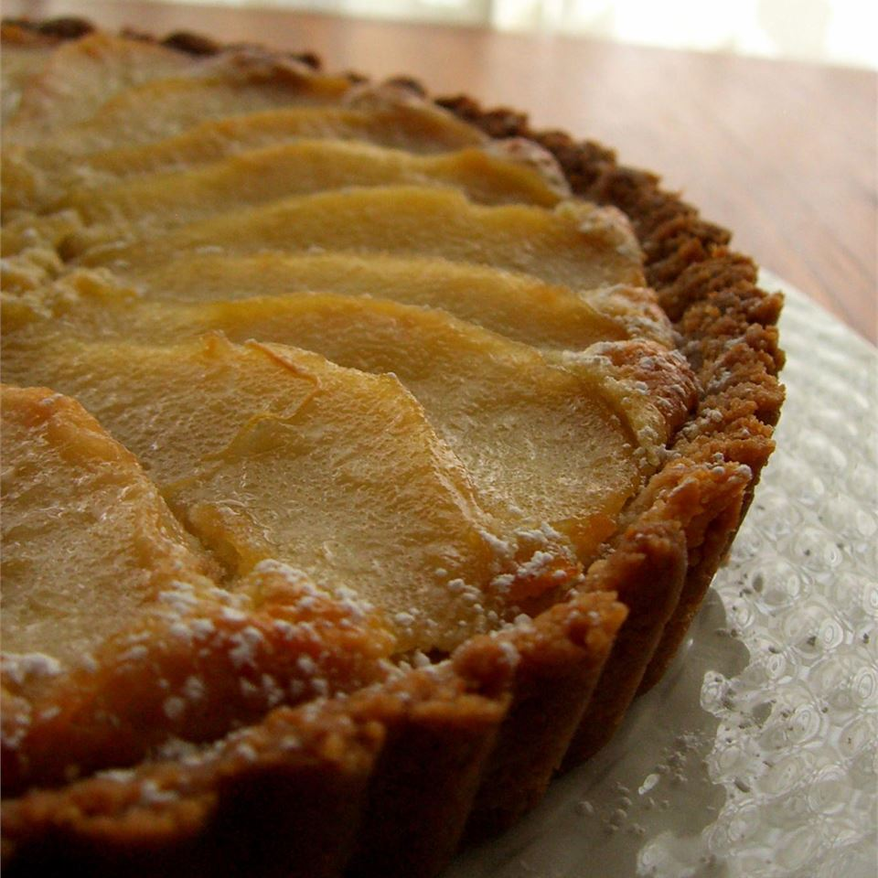

Scandinavian Pear Tart
Description
This luscious dessert combines the flavors of almond, cinnamon, cardamom, cream cheese, and pear to create a tart that will not soon be forgotten!
Ingredients
Crust
- cooking spray
- ½ cup white sugar
- 3 tablespoons butter, softened
- ¾ cup all-purpose flour
- ⅓ cup finely chopped almonds
Filling
- 1 (8 ounce) package cream cheese, softened
- ¼ cup white sugar
- 1 egg
- ¾ teaspoon almond extract
- 1 (15 ounce) can pears, drained and thinly sliced
Topping
- 1 tablespoon white sugar
- ¾ teaspoon ground cardamom
- ¼ teaspoon ground cinnamon
Steps
- Preheat the oven to 425 degrees F (220 degrees C). Coat a 9-inch fluted tart pan with a removable bottom with cooking spray.
- Beat sugar and butter together in a small bowl until crumbly. Beat in flour and almonds. Press over the bottom and up the sides of the prepared tart pan.
- Beat cream cheese in another small bowl until smooth. Beat in sugar, egg, and vanilla extract. Spread over the crust. Arrange pear slices over the cream cheese layer.
- Combine sugar, cardamom, and cinnamon in a small bowl. Sprinkle over the pears.
- Bake in the preheated oven for 10 minutes. Reduce oven temperature to 350 degrees F (175 degrees C). Continue baking until filling is set and an instant-read thermometer inserted into the center reads 160 degrees F (71 degrees C), 15 to 20 minutes.
- Cool tart on a wire rack for 1 hour. Refrigerate for at least 2 hours before slicing.